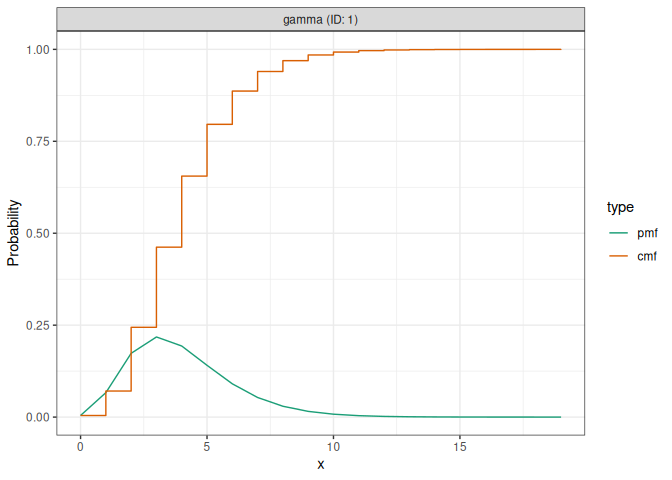

distspec represents a probability distribution as a single object, a <dist_spec>, whose parameters can be either fixed or uncertain. It grew out of EpiNow2 and is aimed at the delay distributions common in infectious disease modelling, such as generation times, incubation periods and reporting delays, while staying independent of any particular model.
With distspec you can:
- define a distribution with a named constructor (
Gamma(),LogNormal(),Normal(),Exponential(),Weibull(),Beta(),Fixed()orNonParametric()), by its natural parameters or by its mean and standard deviation; - give any parameter an uncertain prior (for example
Gamma(shape = Normal(2, 0.5), rate = 1)), or leave a nonparametric mass function uncertain via aDirichlet()prior; - discretise a continuous distribution to a probability mass function (
discretise()), convolve distributions (+,collapse()), draw samples (sample_dist()), and query means, standard deviations, bounds and PMFs.
Installation
Install the development version from GitHub:
# install.packages("remotes")
remotes::install_github("epiforecasts/distspec")Quick start
library(distspec)
#>
#> Attaching package: 'distspec'
#> The following objects are masked from 'package:stats':
#>
#> Gamma, sd
# A gamma delay with mean 4 and standard deviation 2, truncated at 20
delay <- Gamma(mean = 4, sd = 2, max = 20)
delay
#> - gamma distribution (max: 20):
#> shape:
#> 4
#> rate:
#> 1
# Discretise it to a probability mass function
get_pmf(discretise(delay))
#> [1] 4.348792e-03 6.644381e-02 1.734249e-01 2.178947e-01 1.932673e-01
#> [6] 1.407835e-01 9.044713e-02 5.327464e-02 2.944744e-02 1.550665e-02
#> [11] 7.859601e-03 3.862608e-03 1.850583e-03 8.678941e-04 3.997049e-04
#> [16] 1.812269e-04 8.105858e-05 3.582527e-05 1.566718e-05 6.787387e-06
# A parameter can itself be a distribution, expressing uncertainty
Gamma(shape = Normal(2, 0.5), rate = 1)
#> - gamma distribution:
#> shape:
#> - normal distribution:
#> mean:
#> 2
#> sd:
#> 0.5
#> rate:
#> 1plot() shows the probability mass and cumulative distribution functions:

See vignette("distspec") to get started, and the reference index for the full list of functions.
Related work
distspec discretises using primarycensored, which implements the double-censoring calculation. In Julia, the same censoring maths lives in CensoredDistributions.jl, and ComposedDistributions.jl covers similar ground to the <dist_spec> combination interface, with compose() / sequential() in place of + and observed_distribution in place of collapse(). Both distspec and ComposedDistributions.jl carry parameter uncertainty in the object. The Julia packages build on Distributions.jl and represent richer event trees, while distspec keeps a flatter, R-native representation.
Contributors
All contributions to this project are gratefully acknowledged using the allcontributors package following the all-contributors specification. Contributions of any kind are welcome!